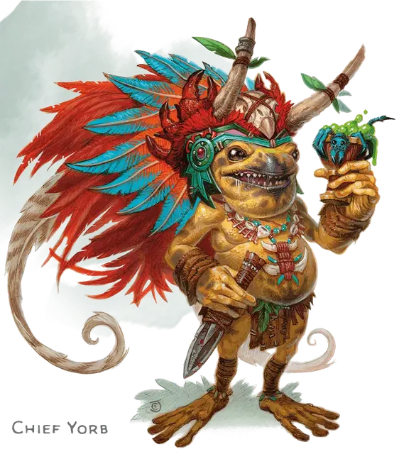

Йорб
Yorb
Маленький Гуманоид (Грунг), законно-злой, именной НИП

Класс Доспеха 13
Хиты 49 (9к6 + 18)
Скорость 25 футов, лазая 25 футов
| мод | спас | ||
|---|---|---|---|
| СИЛ | 7 | −2 | −2 |
| ЛОВ | 16 | +3 | +5 |
| ТЕЛ | 15 | +2 | +2 |
| мод | спас | ||
|---|---|---|---|
| ИНТ | 10 | +0 | +0 |
| МДР | 11 | +0 | +0 |
| ХАР | 12 | +1 | +1 |
Навыки Атлетика +2, Восприятие +2, Выживание +2, Скрытность +5
Иммунитет к урону яд
Иммунитет к состояниям отравление
Чувства пассивное Восприятие 12
Языки Язык Грунгов
Опасность 2 (450 опыта)
Бонус мастерства +2
Особенности
Амфибия. Йорбможет дышать и на воздухе и под водой.
Ядовитая кожа. . Любое существо, которое берет Йорб в захват или как–то ещё входит в прямой контакт с его кожей, должно успешно пройти спасбросок Телосложения Сл 12 или стать отравленным на 1 минуту. Отравленное существо, которое не находится в прямом контакте с Йорбом, может повторять спасбросок в конце каждого своего хода, прекратив эффект при успехе.
Прыжок с места. . Йорб прыгает в длину на расстояние до 25 футов и в высоту до 15, с разбега или без.
Вариант: яд грунга. Яд грунга теряет свои свойства через 1 минуту после отделения от него. Тот же процесс происходит и после смерти грунга.
Существо, отравленное грунгом, страдает от дополнительного эффекта в зависимости от цвета грунга. Эффект длится до окончания действия яда грунга.
Зеленый. Отравленное существо не может двигаться, а только карабкаться или прыгать без разбега, с места. Если существо летает, то не может совершать действия или реакции пока не приземлится.
Синий. Отравленное существо громко кричит или издает громкие звуки в начале и конце своего хода.
Фиолетовый. Отравленное существо испытывает отчаянную жажду покрыть себя жидкостью или грязью. Оно не может совершать реакции или двигаться как–то кроме того чтобы пытаться покрыть себя жидкостью или грязью.
Красный. Отравленное существо должно использовать действие, чтобы съесть еду, если она есть в пределах досягаемости.
Оранжевый. Отравленное существо боится своих союзников.
Золотой. Отравленное существо очаровано и может говорить на Грунгском.
Действия
Кинжал. . Рукопашная или Дальнобойная атака оружием: +5 к попаданию, досягаемость 5 футов или дистанция 20/60 футов, одна цель. Попадание: 5 (1к4+3) колющего урона и цель должна успешно пройти спасбросок Телосложения Сл 12 или получить 5 (2к4) урона ядом.
Короткий лук. Дальнобойная атака оружием: +5 к попаданию, дистанция 80/320 футов, одна цель. Попадание: 6 (1к6 + 3) колющего урона и цель должна успешно пройти спасбросок Телосложения Сл 12 или получить 5 (2к4) урона ядом.
Гипнотизирующий треск (Перезарядка 6). Грунг издает стрекочущий шум, к которому грунги имеют иммунитет. Любой гуманоид или зверь не далее 15 футов от грунга и способный слышать его, должен успешно пройти спасбросок Мудрости Сл 12 или стать ошеломленным до конца следующего хода грунга.